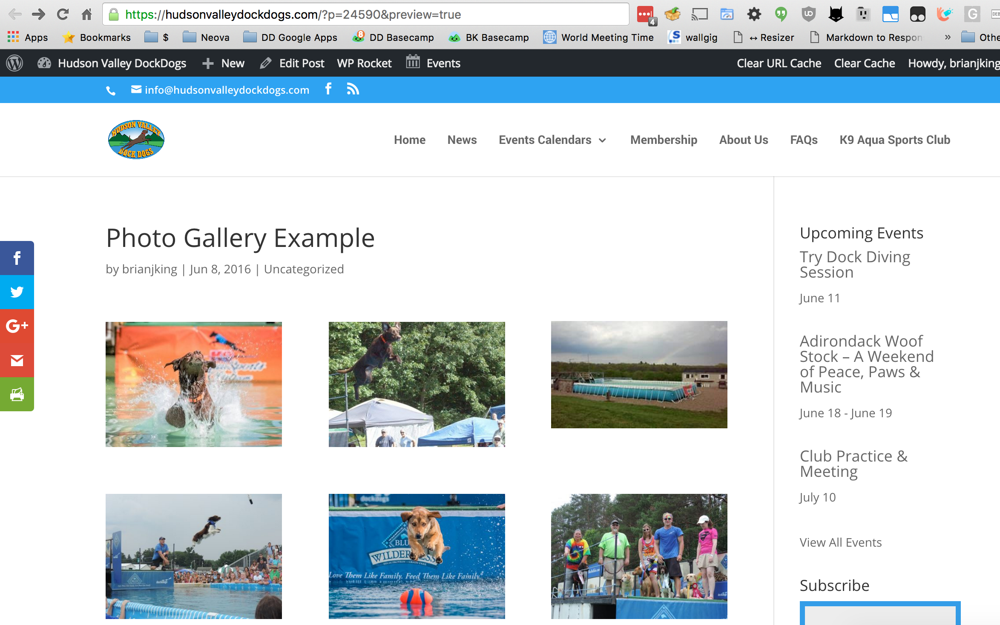

WordPress Posts¶
WordPress sites are primarily comprised of a combination of POSTS and PAGES.
When To Use a Post Versus a Page¶
Tip
The POSTS functionality should be used when you're adding news or another similar update. You will primarily be EDITING PAGES or ADDING POSTS as all pages should be already created during the initial site buildout.
Adding A New Post¶
- Access the WordPress Admin Dashboard
- Click on POSTS from the left hand menu.
- Click on ADD NEW
- Enter a post title
- Type your post text into the box below.
- Save your post with the PUBLISH button
- Visit the website to confirm your post looks correct.
Creating A Photo Gallery¶
- Access the WordPress Admin Dashboard
- Click on POSTS from the left hand menu.
- Click on ADD NEW
- Enter a post title
- Click ADD MEDIA above the post body area.
- Select the photos you'd like to add to your new photo album.
- Click CREATE GALLERY
- Publish the post
- Visit the news page to see the newly created photo gallery.

Warning
An example photo gallery post is available via the WordPress Admin